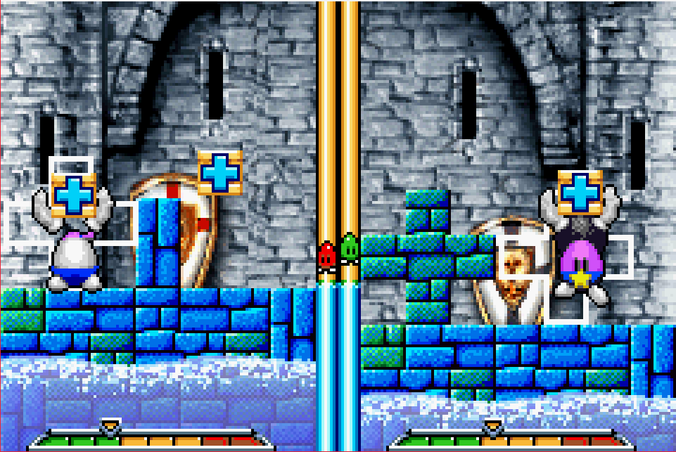
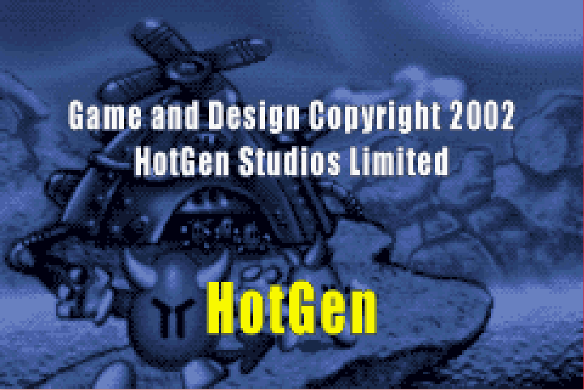
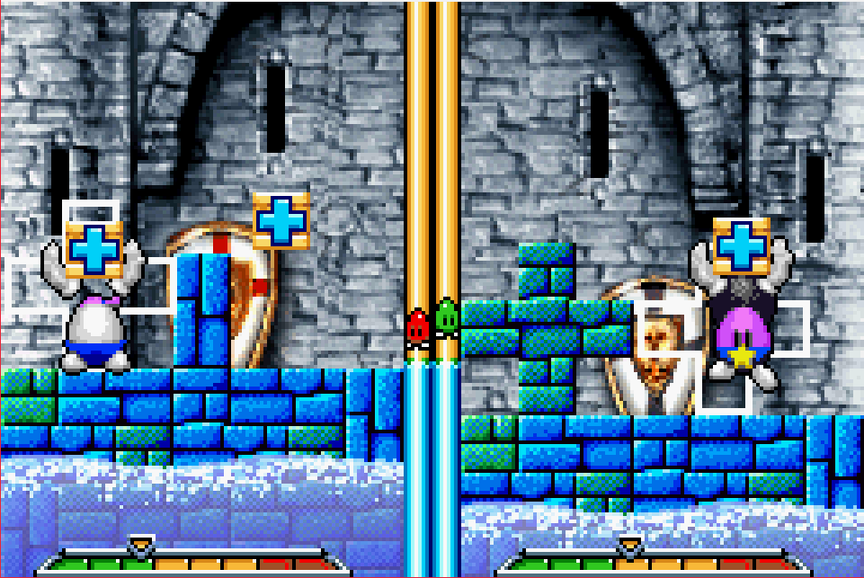
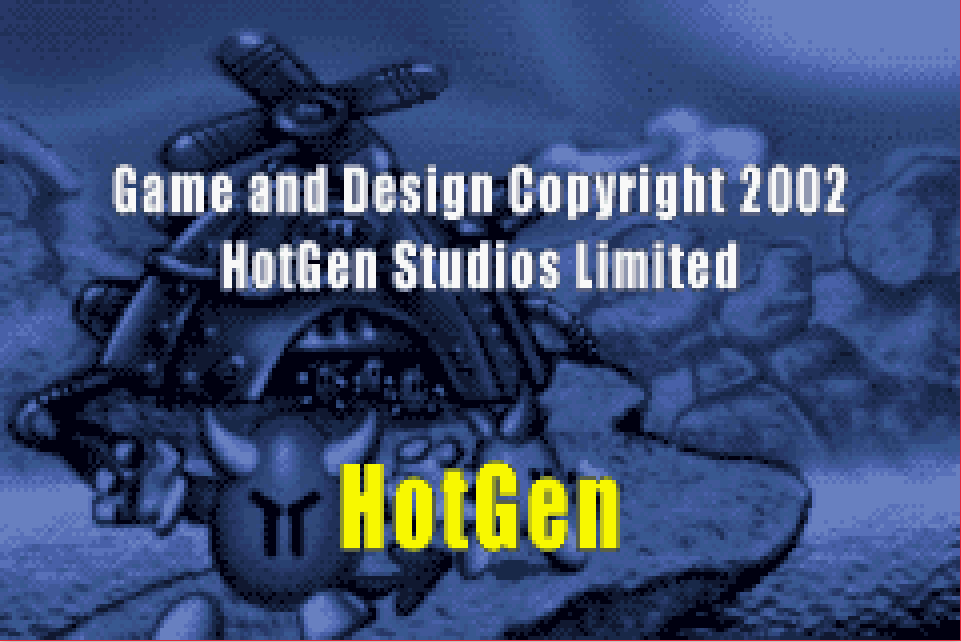

Egg Mania

Complete on 2017-11-18
3 / 5
Release Date: Sep 16, 2002
Meta Score: 75
Screenshots
 



Notes
Egg Mania is an arcade puzzle released on the PS2, Xbox, and Gamecube, and of course the GBA.
This is another one that I'd never heard of and probably never would have played outside of the challenge.
There isn't any kind of story to this game, but it does have "main modes", which end in a credits sequence, so I counted that as done. In this mode you play against 8 AI opponents in a row, and finish when you beat the last one. Each victory gets you an extra life too. The "Over easy" mode lived up to its name, so I ended up beating this one in about 15 minutes. There's also a "Hard boiled" mode which has further difficulty levels, but I didn't feel compelled to keep playing. There are a few other bonus modes, a survival and a time trial. There's a decent in-game tutorial too.
The gameplay is different from anything I've played before. You play a little egg-man in a puzzle area taking up half the screen, with an opponent on the other side. The goal is to build a tower of blocks, in a somewhat Tetris-like fashion, to climb up and grab a floating hot air balloon. Blocks fall from the sky in crates, which you pick up and throw down to build your tower. There's a slowly rising water level, and if it hits a layer of blocks with holes in, they will be destroyed. Also if build up too high without completing a layer your tower will become unstable and fall down.
The game then ends up being to build your tower carefully, until you get high enough to build a narrow tower in the middle that will allow you to jump up and grab the balloon without falling down. There are also some powerups and other stage hazards that happen, but the only one really important is the "super boots", which allow you to jump higher. This allows you to jump up and grab the end balloon much earlier, so are the best item in the game.
I wasn't a fan of the graphics, which are a noisy pre-rendered 3d style. Sometimes the game felt messy and chaotic, especially when powerups are going off and fish are jumping out of the water.
Overall, short but sweet. Decent little puzzler but nothing revolutionary.